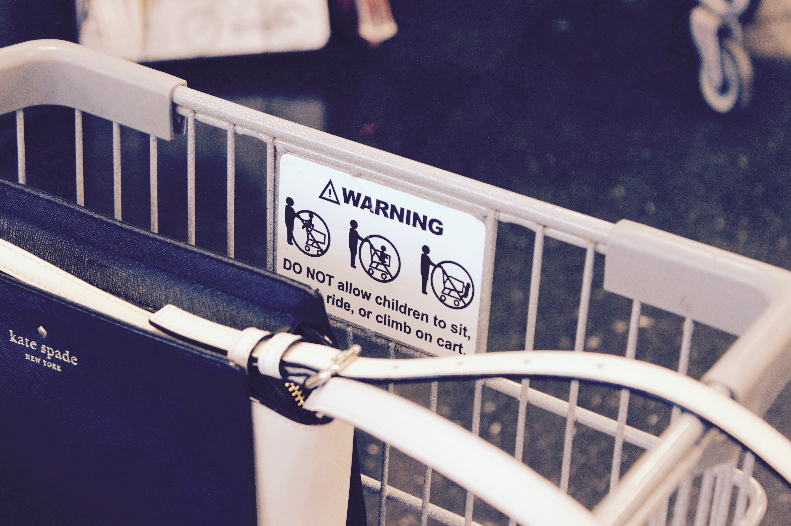
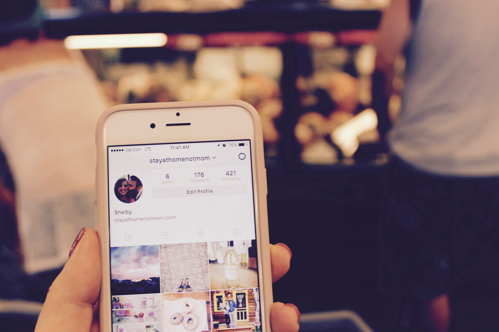
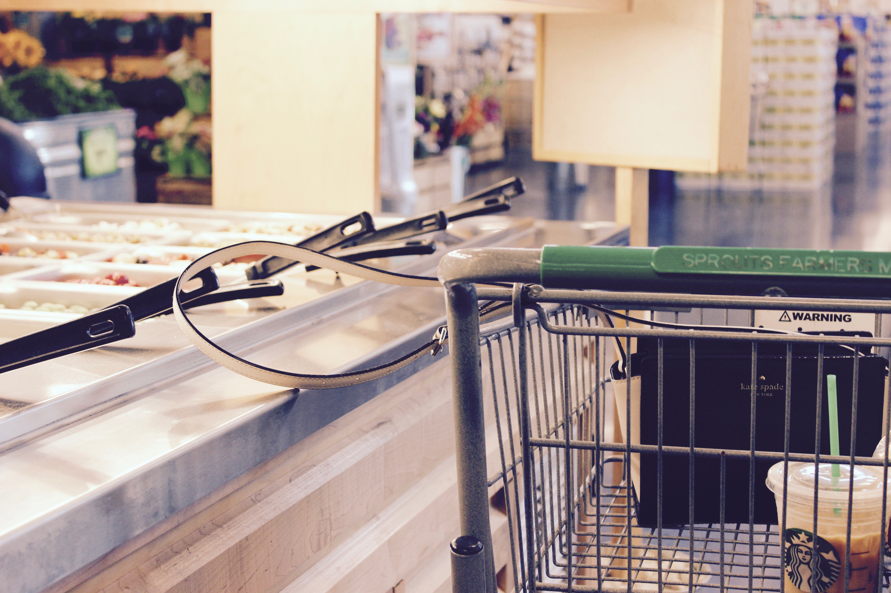
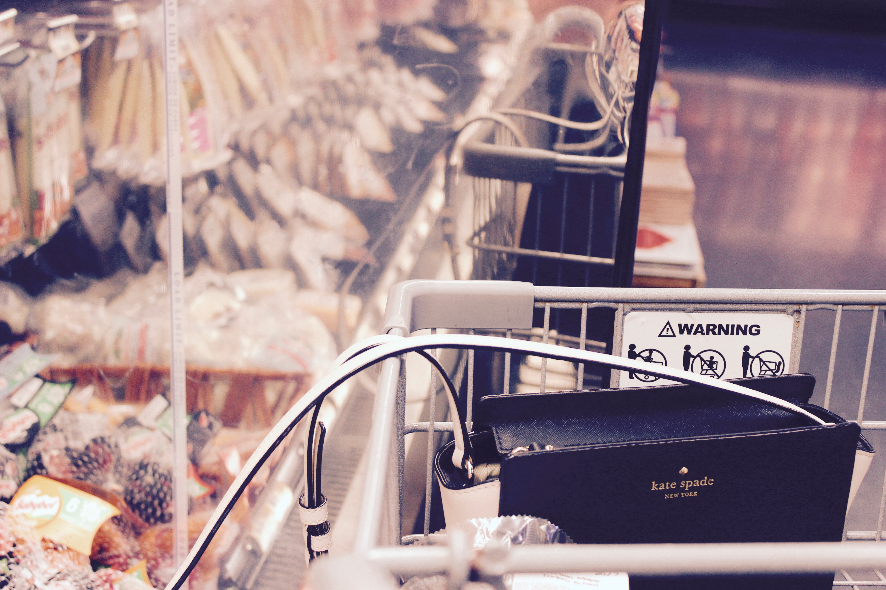

Today, I braved the task of attempting to grocery shop…ALONE. I know what you’re thinking, “Oh my gosh Shelby, that sounds so daunting”, “What are you going to do with your not-kids the whole time?”, “What if you have a perfectly organized cart with no extra items that tiny hands grabbed on the way down the aisle?!?” I know, I know. I’ve thought these things to myself too. Taking my not-kids (literally no children) to the store with me seemed like a task that only Super Woman could do, but I was up for the challenge. Being a stay-at-home not mom is a lot harder than it looks. I’ve noticed going to the grocery store to get food for my family can be so frustrating and chaotic with the not-kids there by my not-side. So, I figured I would give you a glimpse into my food pursuit to show all you other not-moms out there that it’s ok, we’re all in this together and just doing the best we can.
Strolling (Not to be mistaken with Stroller)
I find myself with an unlimited amount of time in the grocery store. So annoying, right? Like, why can't I have a soccer practice to get to in 45 minutes so I'm in and out - boom - with just what I need. Nooooo, being a stay-at-home not mom requires minimal time contraints on almost everything, so I was free to stroll as much as I wanted through Sprouts. Fine.
I grabbed my cart and plopped Kate inside, securely, and adjusted it according to the warning about child (and not-child) safety. Buckle up, Kate!
 They forgot to include not-children on the warning label. I'll let it slide.I headed on over the meat counter to pick up lunches for the week. I didn't need much, being that I only have two mouths to feed, but found myself waiting in an extra long line. I had zero mini humans to entertain so I had all this obnoxious, quiet, free time to entertain myself the best way I knew how while I waited.
 A neat instagram page I found while peacefully waiting for deli meat.When life hands you lemons...
I was strolling through the store getting all the items checked off my list and found I was so fatigued by the minial amount of effort it took to complete my task. I couldn't take it any longer and took a much needed coffee break. Stay-at-home not moms require a standard amount of basic, overpriced Starbucks lattes to get through even the most mundane tasks. I mean, what else am I going to spend my not-kids money on?
 You know what they say - when Sprouts gives you lemons, drink your Starbucks.
You know what they say - when Sprouts gives you lemons, drink your Starbucks.
Damnit Kate
After I felt like I could get through the rest of the trip without being too cranky, Kate started acting up. I swear, what is it with purses? It's like the minute you take them to the store they forget how to act. I was constantly pulling her strap off of things so they wouldn't knock over and spill everywhere. My patience was running thin.
 I caught Kate almost spilling olives all over the floor.  Going for the cheese while also staring at herself in the mirror. Classic.Once I got out of the refrigerated section the rest of the trip was a breeze. A tip for all you stay-at-home not moms out there, shop in the aisles where your purse straps aren't long enough to knock shit over! Who knew. The things we have to put up with, man. Anyway, I sped through the rest of my trip and my cart was perfectly organized. Like, not one thing was out of place or put in my cart that I didn't want. Weird, right? I dealt with it. It's one of those moments as a stay-at-home not mom where you just have to find your zen and remember everything is going to be ok.
My trip was so drama-free and I had way too much 'me time', not to mention no crying not-kids. But despite all that, right before I left, I stopped to soak in the scenery, just my not-kids and me, chillin' in Sprouts. It's the little things, ya know?
 Such a proud not-mom moment.
Such a proud not-mom moment.
I hope me sharing this with all you other not-moms encourages you to be the best stay-at-home not mom you can be. Remember, we aren't perfect. Sometimes, we only spend $40 on groceries for the week. Strangers don't stare at us. But that's ok, because at the end of the day we cherish what's really important....
Sleep. Lots of long, uninterrupted sleep.